2026年北京市顺义区初中学业水平考试化学试卷 · 选择题 第11、12、13、14、15题 · 对应解析
11. 下列标志表示“禁止吸烟”的是
A.
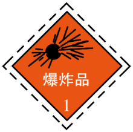
B.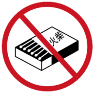
C.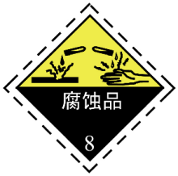
D.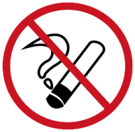
【答案】D
【解析】
【详解】A.该标志是爆炸品危险化学品标识，用于标注易爆类物品，不符合题意。
B.该标志是禁止带火种标识，用于提示禁止携带火柴等火种进入相关区域，不符合题意。
C.该标志是腐蚀品危险化学品标识，用于标注具有腐蚀性的化学物品，不符合题意。
D.该标志为禁止吸烟标识，图案为被禁止符号（圆圈加斜杠）划掉的点燃香烟，符合题意。
12. 氮肥能促叶增绿。下列物质能用作氮肥的是
A.
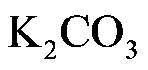
B. C. D.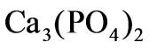
【答案】C
【解析】
【分析】化肥按所含核心营养元素分类：仅含氮元素（）的为氮肥，仅含钾元素（）的为钾肥，仅含磷元素（）的为磷肥。同时含有氮、磷、钾三种元素中的两种或两种以上的肥料称为复合肥。
【详解】A.含钾元素，属于钾肥，不符合要求；
B.含钾元素，属于钾肥，不符合要求；
C.含氮元素，属于氮肥，符合要求；
D.
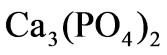
含磷元素，属于磷肥，不符合要求。13. 下列符号中，表示2个氧原子的是
A. 2OB.  C.
C.
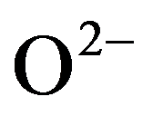
D.
【答案】A
【解析】
【详解】 A.中O是氧的元素符号，前面的2代表2个氧原子，符合要求。
B.右下角的2表示1个氧分子中含2个氧原子，整体代表氧分子/氧气，不符合。
C.右上角的表示1个氧离子带2个单位负电荷，整体代表氧离子，不符合。
D. 代表氢分子/氢气，不含氧原子，不符合。
代表氢分子/氢气，不含氧原子，不符合。
14. 下列操作正确的是
A. 读取液体体积
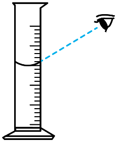
B. 倾倒液体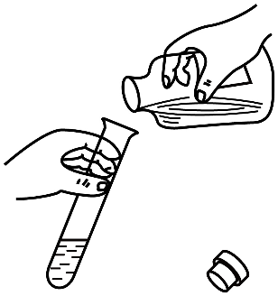
C. 加热液体
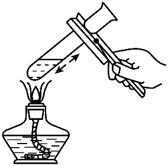
D. 熄灭酒精灯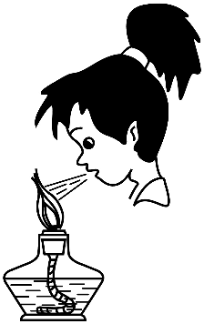
【答案】C
【解析】
【详解】A.量筒读取液体体积时，视线需与液体凹液面最低处保持水平，图中为俯视读数，会使读数偏大，操作错误。
B.倾倒液体的正确要求是瓶塞倒放、标签朝向手心、试剂瓶口紧挨试管口，图中瓶塞正放、瓶口未紧贴试管口，操作错误。
C.加热液体时，使用酒精灯外焰加热，液体体积小于试管容积的 ，试管夹夹持在距试管口处，试管倾斜与桌面约成45°，符合操作规范，操作正确。
，试管夹夹持在距试管口处，试管倾斜与桌面约成45°，符合操作规范，操作正确。
D.熄灭酒精灯需用灯帽盖灭，用嘴吹易将火焰压入灯内引发燃烧爆炸，操作错误。
15. 下列燃料在中燃烧，不会产生 的是
的是
A. CB. C. D.
【答案】D
【解析】
【详解】A. 碳单质含碳元素，在足量氧气中充分燃烧生成 ，反应方程式为：
，反应方程式为：
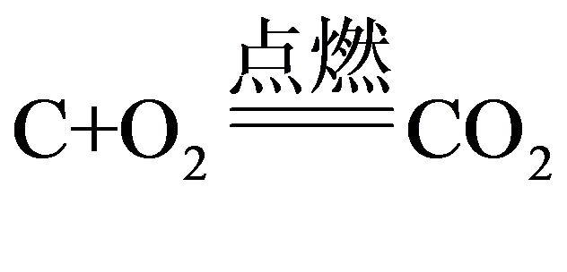
不符合要求。B. 含碳元素，燃烧反应为
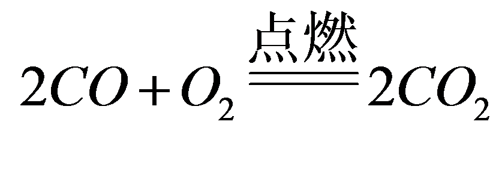
，生成，不符合要求。C. 含碳元素，完全燃烧反应为
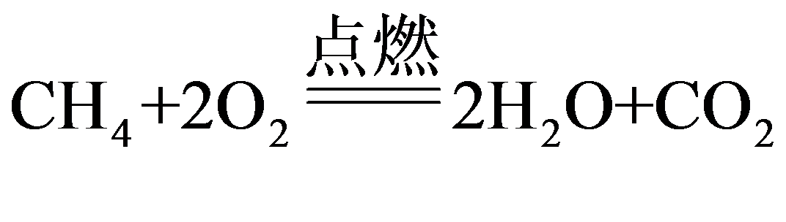
，生成，不符合要求。D. 仅含氢元素，燃烧反应为
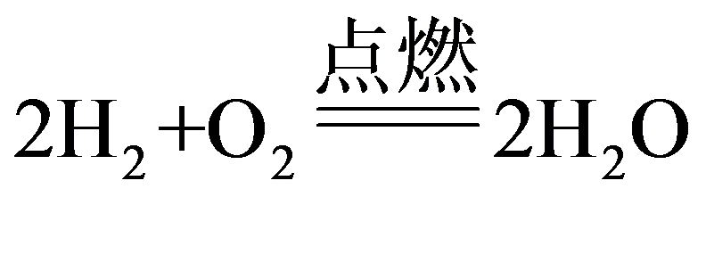
，产物只有水，不会产生，符合要求。